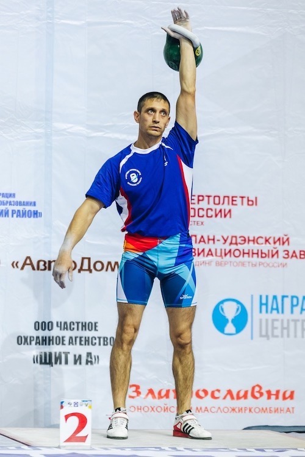

Гиревой спорт.
Корягин Павел Сергеевич
Педагог дополнительного образования. Высшая квалификационная категория. Стаж работы 17 лет. Повышение квалификации: ООО УЦ,"Обучение педагогических работников навыкам оказания первой помощи", "За безопасный труд"4 часа, 2018 год; МАПН Иркутское региональное отделение"Эффективная команда как ресурс развития образовательной организации", 2018 год; ГАУ ДПО ИРО "Профессиональный стандарт "Педагог дополнительного образования детей и взрослых" как условие инновационной деятельности", 72 часа, 2017 год; ОГБПОУ "Училище олимпийского резерва" город Ангарск, "Подготовка спортивных судей главной судейской коллегии и судейских бригад физкультурных и спортивных мероприятий Всероссийского физкультурно-спортивного комплекса "Готов к труду и обороне", 16 часов, 2017 год.
Педагог дополнительного образования. Высшая квалификационная категория. Стаж работы 6 лет. Образование средне-специальное, "Русско-азиатский правовой колледж", 2011 год. Переподготовка: ГАУ ДПО "Институт развития образования Иркутской области","Содержание и технологии работы педагога дополнительного образования", 2016 год. Повышение квалификации: ОГБП ОУ,"Подготовка спортивных судей главной судейской коллегии и судейских бригад физкультурных и спортивных мероприятий Всероссийского физкультурно-спортивного комплекса "Готов к труду и обороне",16 часов, 2017 год; "Училище олимпийского резерва" город Ангарск, "Эффективная команда как ресурс развития образовательной организации", 2018 год; МАПН Иркутское региональное отделение 2017 год "Профессиональный стандарт "Педагог дополнительного образования детей и взрослых" как условие инновационной деятельности", 72 часа.
Муниципальное бюджетное учреждение дополнительного образования «Районный центр внешкольной работы» 665479, Иркутская область, Усольский район, р.п. Белореченский, д.48 т.8(39543)25499 E-mail: rcvr.mbudo@mail.ru
Адрес сайта учреждения: МБУДО"РЦВР"